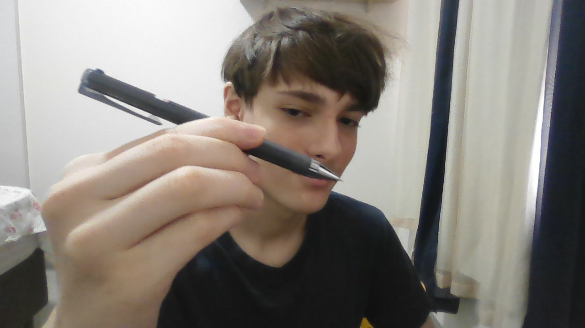

Saudações, me chamo Pedro Andrade, tenho 15 anos e nasci no Distrito Federal.
Porém hoje em dia moro no Pará, em Canaã dos Carajás, cidade da mineradora Vale.
Faço o 2° ano do Ensino Médio, (1 ano adiantado) no Centro Educacional Primeiro Mundo (CEPM)
Eu já construí vários projetos, desde simuladores até jogos e ferramentas.
Sou Mestre Nacional (NM) em Xadrez, nomeado com 14 anos pela CBX (Confederação Brasileira de Xadrez)
Eu gosto muito de programação, xadrez, piano e tênis de mesa.
E como a vida é só uma, eu sempre gosto de explorar e viver ao máximo, em todos os ângulos
É isso por enquanto! Aqui estão minhas socials se vc quiser